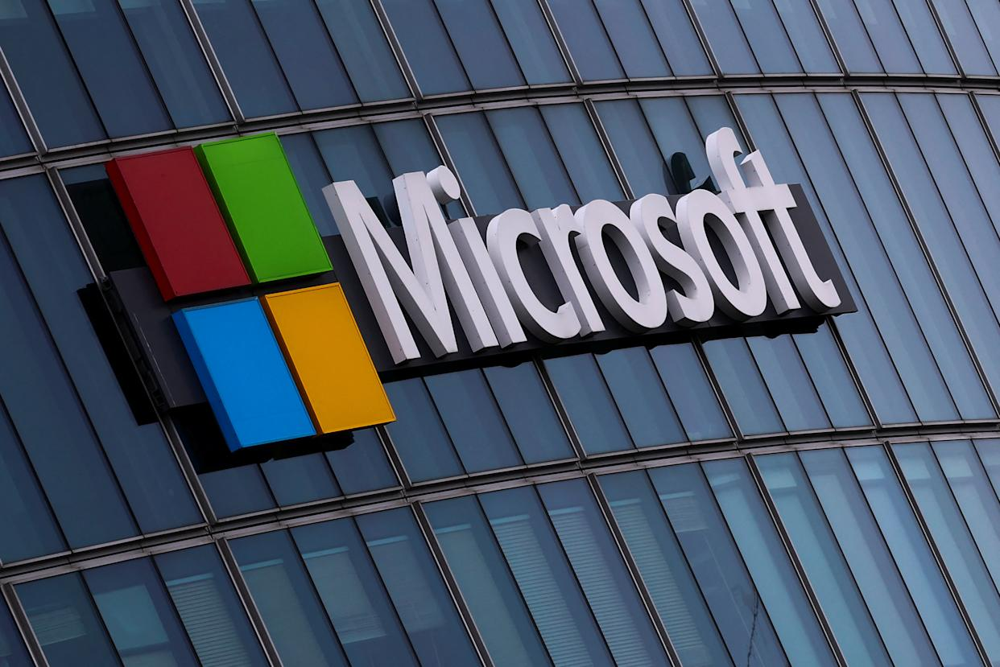

Microsoft — одна из крупнейших технологических компаний в мире, основанная в 1975 году Биллом Гейтсом и Полом Алленом. Компания сыграла ключевую роль в развитии персональных компьютеров и программного обеспечения.
| Версия | Год | Особенности |
|---|---|---|
| Windows 95 | 1995 | Кнопка "Пуск", новый интерфейс |
| Windows XP | 2001 | Стабильность и популярность |
| Windows 10 | 2015 | Универсальная платформа |
| Windows 11 | 2021 | Современный дизайн |
Microsoft повлияла на развитие технологий во всем мире. Благодаря её продуктам миллионы людей работают, учатся и играют каждый день. Компания продолжает внедрять инновации в области облачных вычислений, искусственного интеллекта и разработки программного обеспечения.